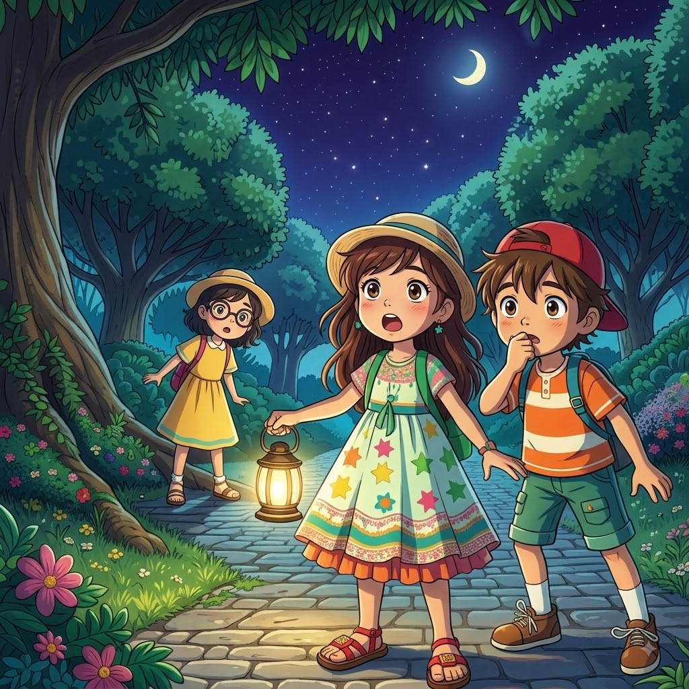

Luísa, João e Clara investigam uma sombra misteriosa no bairro de Vila Alegre, que os leva a um encontro inesperado com o Sr. Figueira e seu travesso esquilo, Pipoca. Juntos, eles se aventuram em uma emocionante caçada para descobrir o que está por trás dessa enigmática sombra.

A Sombra do Esquilo Pipoca
Capítulo 1: O místerio da sombra misteriosa.
Era uma noite tranquila no bairro de Vila Alegre, onde as estrelas piscavam como pequenos vaga-lumes no céu. Luísa, uma menina de 11 anos, estava sentada no alpendre da sua casa, balançando os pés e olhando para a rua. Tudo parecia calmo, exceto por uma sombra misteriosa que se movia de um lado para o outro no final da rua.
Curiosa como sempre, Luísa se levantou e decidiu investigar. "O que será que é aquilo?", pensou em voz alta. Seu gato, Pirilampo, miou em resposta, como se também estivesse intrigado.
Assim que Luísa se preparava para sair, seus amigos, João e Clara, apareceram na esquina. "Ei, Luísa! O que você está olhando?", perguntou João, com um sorriso curioso.
"Tem uma sombra esquisita ali no final da rua", respondeu Luísa, apontando. "Vamos descobrir o que é?"
Clara, sempre a mais sensata do grupo, hesitou por um momento. "Será que é seguro? E se for um monstro?"
"Um monstro? Não seja boba, Clara! Deve ser algo muito mais interessante!", exclamou João, piscando para Luísa.
E assim, o trio se preparou para embarcar em uma missão farfeluda para resolver o mistério da sombra misteriosa.
Capítulo 2: A primeira pista
Com a lanterna de João na mão, eles avançaram pela rua, tentando não fazer barulho. A sombra parecia se mover sempre que eles se aproximavam, o que tornava tudo ainda mais intrigante.
"Olhem!", sussurrou Luísa, apontando para uma pequena pegada no chão. "Alguém passou por aqui."
Pirilampo, que havia seguido o grupo sem que eles percebessem, começou a farejar a pegada, como um detetive felino. De repente, ele começou a correr em direção a um arbusto.
"Vamos atrás dele!", gritou Clara, tentando não perder o gato de vista.
Quando chegaram ao arbusto, encontraram algo inesperado: um par de sapatos enormes, claramente grandes demais para qualquer um dos habitantes do bairro. "Mas o que é isso?", perguntou João, pegando um dos sapatos. "Quem tem pés tão grandes assim?"
Luísa riu. "Será que é um gigante?"
"Ou talvez um palhaço?", sugeriu Clara, olhando ao redor para ver se encontrava mais pistas.
O mistério apenas começava, e eles estavam determinados a descobrir a verdade.
Capítulo 3: O encontro inesperado
Enquanto o trio discutia as possibilidades, uma voz grave e amigável surgiu de trás de uma árvore. "Procuram por algo, crianças?"
Os três amigos deram um pulo, quase deixando os sapatos caírem. Um senhor alto, com uma barba branca e um chapéu engraçado, apareceu, sorrindo para eles.
"Desculpem-me se assustei vocês", disse ele, com um olhar travesso nos olhos. "Meu nome é Sr. Figueira, e esses são meus sapatos."
Luísa piscou, ainda surpresa. "Mas por que seus sapatos estavam aqui?"
"Ah, é uma longa história", começou o Sr. Figueira, coçando a cabeça. "Eu estava tentando pegar a sombra misteriosa também! Mas parece que ela é muito mais rápida do que eu."
João riu. "Então você também viu a sombra! O que acha que é?"
O Sr. Figueira olhou para o céu, pensativo. "Acredito que seja um pequeno amigo meu, que adora pregar peças e se esconder. Ele é um esquilo chamado Pipoca."
Os olhos de Luísa brilharam. "Um esquilo? Isso é incrível! Podemos ajudar a encontrá-lo?"
"Claro! Mas vocês terão que ser rápidos e espertos, porque Pipoca é muito travesso", respondeu o Sr. Figueira, piscando.
Capítulo 4: A Caçada ao Esquilo
Com uma nova missão em mente, o grupo seguiu o Sr. Figueira enquanto ele explicava sobre as travessuras de Pipoca. "Ele adora roubar pequenas coisas brilhantes e se esconder nos lugares mais improváveis", contou o senhor, enquanto caminhavam pelo parque.
Pirilampo, o gato, parecia estar mais animado do que nunca, correndo de um lado para o outro. Logo, ele parou em frente a uma árvore grande e começou a miar.
"Será que ele encontrou alguma coisa?", perguntou Clara, esperançosa.
Luísa se aproximou e olhou para cima. Lá estava Pipoca, olhando para eles com um olhar curioso e um pequeno objeto brilhante em suas patas.
"É ele!", exclamou João, tentando não rir. "Parece que encontramos nosso ladrãozinho."
O Sr. Figueira sorriu. "Ah, Pipoca, sempre nos pregando peças."
Com calma e paciência, o Sr. Figueira se aproximou da árvore e chamou Pipoca. O pequeno esquilo desceu com cuidado, ainda segurando o objeto brilhante.
"Vamos ver o que você pegou desta vez", disse o Sr. Figueira, pegando o objeto das patas de Pipoca. Era uma moeda antiga, provavelmente perdida por alguém no parque.
Capítulo 5: A Conclusão Surpreendente
Com Pipoca de volta em segurança, o Sr. Figueira agradeceu aos três amigos pela ajuda. "Sem vocês, eu estaria ainda procurando por ele!"
"Foi muito divertido!", respondeu Luísa, sorrindo. "Mas agora precisamos voltar, está ficando tarde."
O Sr. Figueira acenou, prometendo que, da próxima vez, traria Pipoca para visitá-los. "Ele sempre gosta de fazer novos amigos", disse ele, piscando.
Enquanto caminhavam de volta para casa, Clara comentou: "Quem diria que a sombra misteriosa era um esquilo travesso!"
João riu. "E pensar que achamos que era um monstro ou um gigante!"
Luísa olhou para o céu estrelado, sentindo-se feliz e satisfeita. "Foi uma aventura e tanto. Acho que nunca mais vou olhar para uma sombra da mesma maneira."
Quando chegaram em casa, cada um foi para seu quarto, com histórias para contar e sonhos para sonhar. E, enquanto Luísa se preparava para dormir, ela se perguntou que outros mistérios poderiam estar esperando por eles no bairro de Vila Alegre.
Com um sorriso no rosto, ela apagou a luz, pronta para sonhar com novas aventuras.